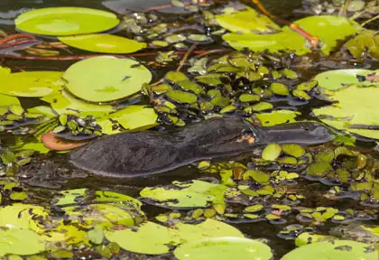
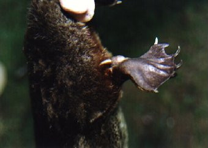

Endémique de l'Australie, l'ornithorynque a surpris les premiers colons par son aspect improbable : un bec de canard sur un corps de mammifère. Des zoologistes en ont fait un véritable objet d'étude en le ramenant en Europe sous différentes formes : peaux ou conservés dans de l'alcool. Au XIXe siècle, l'ornithorynque fut traqué pour sa fourrure très douce. Chassée jusque dans les années 1920, l'espèce est aujourd'hui totalement protégée.


L'ornithorynque vit principalement dans l'eau douce. Très bon nageur, il apprécie davantage les eaux froides aux eaux chaudes. L'ornithorynque habite les rivières, les lagons et les ruisseaux de moins de 5 m de profondeur. Il préfère les zones avec des berges abruptes qui contiennent des racines, de la végétation, des roseaux et des morceaux de bois. L'ornithorynque vit dans un terrier, long de 5 à 10 m, qu'il creuse au bord de l'eau. Il s'y protège de ses prédateurs : les anguilles et la morue de Murray, un des plus gros poissons d'eau douce d'Australie.
En tant que mammifère monotrème, la femelle ornithorynque a la particularité de pondre et d'allaiter ses petits. Après l'accouplement, elle pond généralement 2 ou 3 œufs. Elle les couve dans un terrier différent de celui dans lequel elle habite. Une fois la période d'incubation terminée, la femelle ornithorynque allaite les bébés pendant 4 mois. Elle ne possède pas de mamelles, son lait coule le long des poils de son ventre. Les petits sortent pour la première fois du terrier familial à l'âge de 3 mois et demi. Les ornithorynques peuvent vivre jusqu'à 12 ans à l'état sauvage.


Les monotrèmes, famille dont fait partie l'ornithorynque, sont les seuls mammifères venimeux. Seuls les ornithorynques mâles sont dotés de cette particularité. Ils possèdent deux glandes de venin attachées à des éperons sur leurs pattes arrière. Le venin est mortel pour la plupart des animaux mais pas pour l'homme. Chez ce dernier, une piqûre provoque une violente douleur et l'inflammation du membre touché. Cela peut durer pendant plusieurs jours.